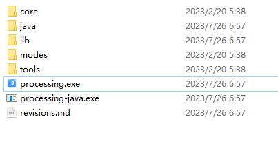
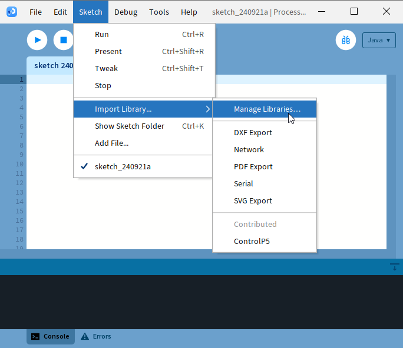
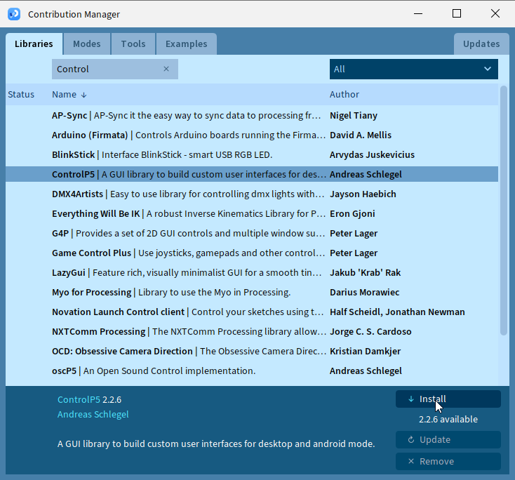
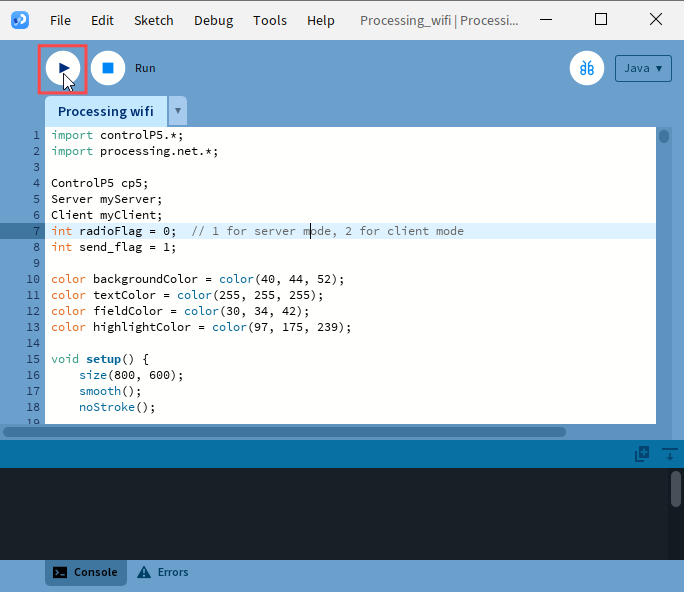
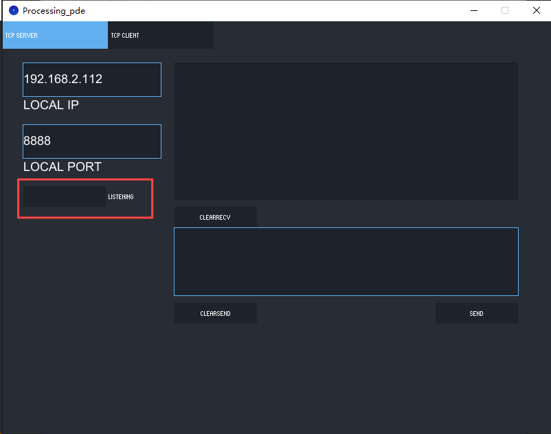

Chapter 21 TCP/IP
In this chapter, we will introduce how ESP32-S3 implements network communications based on TCP/IP protocol. There are two roles in TCP/IP communication, namely Server and Client, which will be implemented respectively with two projects in this chapter.
Project 21.1 As Client
In this section, ESP32-S3 is used as Client to connect Server on the same LAN and communicate with it.
Install Processing In this tutorial, we use Processing to build a simple TCP/IP communication platform. If you’ve not installed Processing, you can download it by clicking https://processing.org/download/. You can choose an appropriate version to downl oad according to your PC system.

Unzip the downloaded file to your computer. Click “processing.exe” as the figure below to run this software.
Use Server mode for communication
Install ControlP5.
 Open the “Super_Starter_Kit_for_ESP32_S3\processing\Processing_wifi.pde”, and click “Run”.
The new pop-up interface is as follows. If ESP32-S3 is used as client, select TCP SERVER mode for Processing_wifi

When Processing_wifi selects TCP SERVER mode, ESP32-S3 Sketch needs to be changed according to Processing_wifi’s displaying of LOCAL IP or LOCAL PORT.
If ESP32-S3 serves as server, select TCP CLIENT mode for Processing_wifi.

When Processing_wifi selects TCP CLIENT mode, the LOCAL IP and LOCAL PORT of Processing_wifi need to be changed according to the IP address and port number printed by the serial monitor.
Mode selection: select Server mode/Client mode. IP address: In server mode, this option does not need to be filled in, and the computer will automatically obtain the IP address. In client mode, fill in the remote IP address to be connected.
Port number: In server mode, fill in a port number for client devices to make an access connection. In client mode, fill in port number given by the Server devices to make an access connection.
Start button: In server mode, push the button, then the computer will serve as server and open a port number for client to make access connection. During this period, the computer will keep monitoring. In client mode, before pushing the button, please make sure the server is on, remote IP address and remote port number is correct; push the button, and the computer will make access connection to the remote port number of the remote IP as a client.
clear receive: clear out the content in the receiving text box clear send: clear out the content in the sending text box Sending button: push the sending button, the computer will send the content in the text box to others.
Connect

Code
Before running the Code, please open “Processing_wifi.pde.” first, and click “Run”.
The newly pop up window will use the computer’s IP address by default and open a data monitor port. Click “Listening”。
Move the program folder “Super_Starter_Kit_for_ESP32_S3/Python/Python_C odes” to disk(D) in advance with the path of “D:/Micropython_Codes”.
Open “Thonny”, click “This computer” >> “D:” >> “Micropython_Codes” >> “21.1_TCP_a s_Client” and double click “TCP_as_Client.py”.
Before clicking “Run current script”, please modify the name and password of your router and fill in the “host” and “port” according to the IP information shown in the box below:
21.1_TCP_as_Client

Click “Run current script” and in “Shell”, you can see ESP32-S3 automatically connects to Processing_wifi.

If you don’t click “Listening” for Processing_wifi, ESP32-S3 will fail to connect and will print information as follows:

ESP32-S3 connects with TCP SERVER, and TCP SERVER receives messages from ESP32S3, as shown in the figure below. You can enter any content in TCP SERVER, click SEND, and ESP32-S3 will receive this message

The following is the program code:
import network
import socket
import time
ssidRouter = "********" #Enter the router name
passwordRouter = "********" #Enter the router password
host = "192.168.2.112" #input the remote server
port = 8888 #input the remote port
wlan=None
s=None
def connectWifi(ssid,passwd):
global wlan
wlan=network.WLAN(network.STA_IF)
wlan.active(True)
wlan.disconnect()
wlan.connect(ssid,passwd)
while(wlan.ifconfig()[0]=='0.0.0.0'):
time.sleep(1)
return True
try:
connectWifi(ssidRouter,passwordRouter)
s = socket.socket()
s.setsockopt(socket.SOL_SOCKET, socket.SO_REUSEADDR, 1)
s.connect((host,port))
print("TCP Connected to:", host, ":", port)
s.send('Hello')
s.send('This is my IP.')
while True:
data = s.recv(1024)
if(len(data) == 0):
print("Close socket")
s.close()
break
print(data)
ret=s.send(data)
except:
print("TCP close, please reset!")
if (s):
s.close()
wlan.disconnect()
wlan.active(False)
Project 21.2 As Server
In this section, ESP32-S3 is used as a server to wait for the connection and communication of client on the same LAN.
Circuit
Connect ESP32-S3 to the computer using a USB cable.
Code
Move the program folder “Super_Starter_Kit_for_ESP32_S3/Python/Python_C odes” to disk(D) in advance with the path of “D:/Micropython_Codes”.
Open “Thonny”, click “This computer” >> “D:” >> “Micropython_Codes” >> “21.2_TCP_as_Server” and double click “TCP_as_Server.py”.
Before clicking “Run current script”, please modify the name and password of your router shown in the box below.
21.2_TCP_as_Server

After making sure that the router’s name and password are correct, click “Run current script” and in “Shell”, you can see a server opened by the ESP32-S3 waiting to connecting to other network devices.

Processing： Open the “Super_Starter_Kit_for_ESP32_S3/Codes/MicroPytho n_Codes/21.2_TCP_as_Server/sketchWiFi/Processing_wifi.pde”. Based on the message printed in “Shell”, enter the correct IP address and port when processing, and click to establish a connection with ESP32-S3 to communicate.

You can enter any information in the “Send Box” of Processing_wifi. Click “Send” and ESP32-S3 will print the received messages to “Shell” and send them back to Processing_wifi.

The following is the program code:
import network
import socket
import time
ssidRouter = "********" #Enter the router name
passwordRouter = "********" #Enter the router password
port = 8000 #input the remote port
wlan=None
listenSocket=None
def connectWifi(ssid,passwd):
global wlan
wlan=network.WLAN(network.STA_IF)
wlan.active(True)
wlan.disconnect()
wlan.connect(ssid,passwd)
while(wlan.ifconfig()[0]=='0.0.0.0'):
time.sleep(1)
return True
try:
connectWifi(ssidRouter,passwordRouter)
ip=wlan.ifconfig()[0]
listenSocket = socket.socket()
listenSocket.bind((ip,port))
listenSocket.listen(1)
listenSocket.setsockopt(socket.SOL_SOCKET, socket.SO_REUSEADDR, 1)
print ('tcp waiting...')
while True:
print("Server IP:",ip,"\tPort:",port)
print("accepting.....")
conn,addr = listenSocket.accept()
print(addr,"connected")
break
conn.send('I am Server')
while True:
data = conn.recv(1024)
if(len(data) == 0):
print("close socket")
listenSocket.close()
wlan.disconnect()
wlan.active(False)
break
else:
print(data)
ret = conn.send(data)
except:
print("Close TCP-Server, please reset.")
if(listenSocket):
listenSocket.close()
wlan.disconnect()
wlan.active(False)